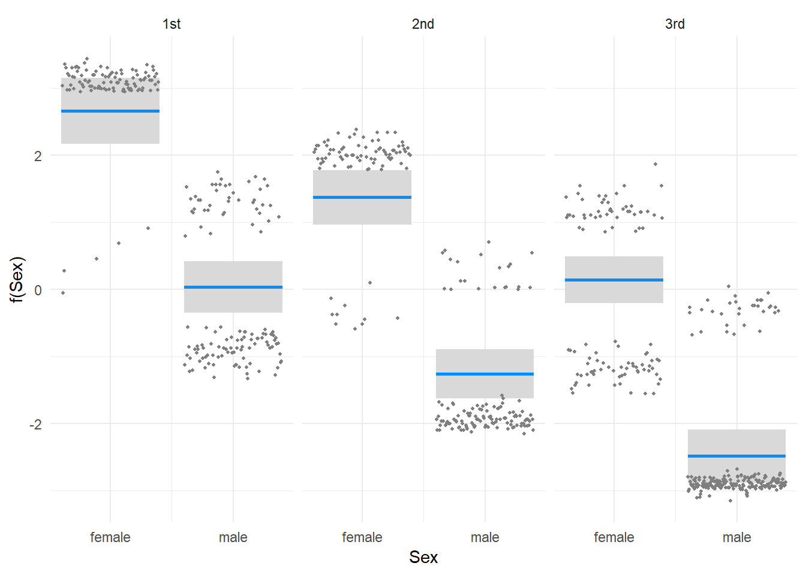

Titanic: dead or alive
In this tutorial we use logistic regression to predict (model) whether passengers on the Titanic lived or died, as determined by passenger class (1st, 2nd, 3rd), age and sex (male, female).
First we read the data, and convert ‘Survived’ to a variable with more meaningful labels:
library(lgrdata)
data(titanic)
titanic$Survived <- factor(ifelse(titanic$Survived == 1, "yes", "no"))Let’s look at a few random rows,
library(dplyr)
sample_n(titanic, 8)## Name PClass Age Sex
## 1 Lahowd, Mr Sarkis 3rd NA male
## 2 Jussila, Miss Katriina 3rd 20 female
## 3 Oreskovic, Mr Luka 3rd NA male
## 4 Banoura, Miss Ayout 3rd 15 female
## 5 Hart, Miss Eva Miriam 2nd 7 female
## 6 Peduzzi, Mr Joseph 3rd NA male
## 7 Ivanoff, Mr Konio 3rd NA male
## 8 Danbom, Mrs Ernst Gilbert (Anna Sigrid Maria Brogren) 3rd 28 female
## Survived
## 1 no
## 2 no
## 3 no
## 4 yes
## 5 yes
## 6 no
## 7 no
## 8 noThe idea here is to find out whether the probability of survival depends on the passenger’s Age, Sex and PClass (passenger class). Before we proceed, it is always a good idea to start by visualizing the data to find out what we are dealing with (and to make sure we will interpret the model output correctly). If we plot two factor variables against each other, R produces a ‘mosaic plot’, as the following example demonstrates.
par(mfrow=c(1,2), mgp=c(2,1,0))
with(titanic, plot(Sex, Survived, ylab="Survived", xlab="Sex"))
with(titanic, plot(PClass, Survived, ylab="Survived", xlab="Passenger class"))Probability of survival versus passenger class and sex for the titanic data.
Logistic regression
In a ‘normal’ linear regression model, we use lm to study the dependence of a continuous response variable on one or more predictors. If the response variable is not continuous, but instead takes only two values (failure and success, 0 or 1, and so on), we must use logistic regression to study the dependence.
In R you can use glm to achieve this, which is used in pretty much the same way as lm. Also, you have to add the argument family=binomial to indicate logistic regression, as glm is a more general function that allows other models.
fit_1 <- glm(Survived ~ Age + Sex + PClass, data=titanic, family=binomial)The first step is to check whether all predictors are significant, that is, whether there is evidence that they contribute to explaining variation in the survival status of the passengers.
Here we prefer the Anova function from the car package. Small p-values (indicated with ***) mean the factors are significant.
library(car)
Anova(fit_1)## Analysis of Deviance Table (Type II tests)
##
## Response: Survived
## LR Chisq Df Pr(>Chisq)
## Age 28.454 1 9.595e-08 ***
## Sex 214.776 1 < 2.2e-16 ***
## PClass 100.445 2 < 2.2e-16 ***
## ---
## Signif. codes: 0 '***' 0.001 '**' 0.01 '*' 0.05 '.' 0.1 ' ' 1It seems all three variables are somehow “significant” in the model, but so what? We are usually more interested in how the relationships vary.
We have fit a model with all three variables, and to make sense of it we use the visreg package (visualisation of regression models).
We start with looking at the effect of one variable, Age.
library(visreg)
visreg(fit_1, "Age", scale = "response")Here, the plot shows the effect of passenger age (X-axis) on the probability that a passenger survived. We use scale = "response" especially for glm models, to make sure we plot a probability on the Y-axis.
The above plot is constructed by keeping all other variables out of the model, and only visualizing what happens when you vary one of them. We can add another variable with the by argument, like so:
visreg(fit_1, "Age", by = "PClass", overlay = TRUE, scale = "response")
Here we also like to use overlay = TRUE, otherwise we end up with three panels (in this plot, the effects are easier to study).
We now conclude that younger passengers were (much!) more likely to survive, and first class passengers more likely than lower classes.
What about male vs. female passengers? First, we look at the difference between male and female passengers by passenger class, holding the age of the passenger constant. To do this, we simply leave out age in visreg - the default behaviour is to set age to the mean across all data points.
Also, here we use gg=TRUE to make a ggplot2 figure, which allows use of a theme (and whatever ggplot2 settings you like):
library(ggplot2)
visreg(fit_1, "Sex", by="PClass", gg=TRUE) +
theme_minimal()
There seems to be a large difference between male and female survivorship. We can make a different plot with a small adjustment:
library(ggplot2)
visreg(fit_1, "PClass", by="Sex", gg=TRUE, scale = "response") +
theme_minimal()Now the difference between male and female passengers is very striking - as is the difference between passenger classes.
Finally, we can make a pair of plots, visualizing all three variables and their effect on passenger survival. As earlier, we make a plot of survival probability by passenger age and passenger class, one for each of ‘female’ and ‘male’ passengers.
With the use of the cond argument, we can take subsets of the model predictions. Also note the use of ggExtra to place the two plots side by side. We also use settings rug=FALSE to switch off the vertical lines indicating observations, and add a couple of small ggplot2 settings (title, theme).
library(gridExtra)
plot_male <- visreg(fit_1, "Age",
by="PClass",
scale = "response",
overlay = TRUE,
gg = TRUE,
rug = FALSE,
cond=list(Sex="male")) +
theme_minimal() +
ylim(0,1) +
theme(legend.position = "none") +
labs(title = "Men")
plot_female <- visreg(fit_1, "Age",
by="PClass",
scale = "response",
overlay = TRUE,
gg = TRUE,
rug = FALSE,
cond=list(Sex="female")) +
theme_minimal() +
ylim(0,1) +
theme(legend.position = "none") +
labs(title = "Women")
grid.arrange(plot_male, plot_female, ncol = 2)